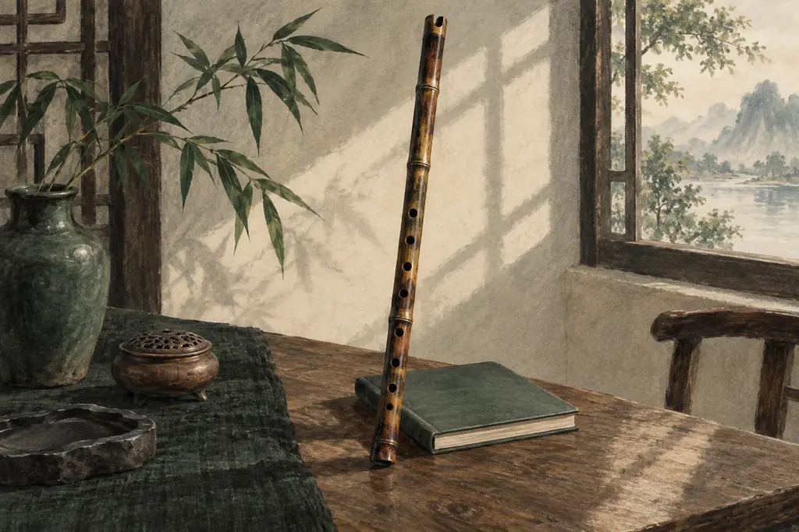

張老師音樂學院
課程
練習室
出品
學習指南
音樂手記
聯絡
把一個音聽清楚，
讓音樂慢慢走近。
張家詠老師 · 二十年教學經驗 · 香港屯門
長笛、笛子、洞簫與空靈鼓。從自然的聲音、清楚的拍子，到一句有呼吸的旋律。
認識課程
進入練習室

Courses 課程
長笛課程
由第一個自然的音，走到有呼吸、有方向的旋律。
笛子課程
聽見竹聲的明亮，也學會其中的細節與分寸。
洞簫課程
從一道氣流開始，慢慢聽清一個音的來去。
空靈鼓課程
讓每一下敲擊有位置，讓聲音之間有回應。
Practice 練習室
調音器
音名、簡譜與音分
節拍器
細分拍與逐步加速
長笛指法表
三十四個基本指法
譜間
簡譜打譜工作室
長笛紙牌
網上翻卡先試玩
Journal 手記
打開笛盒之後：把練習的首五分鐘留給聲音
長笛
拍子像腳步，節奏像說話
樂理
陪練時少說一句「又錯了」，可以換成甚麼？
家長陪練
← 樣板03・瑞士極簡・返回總覽